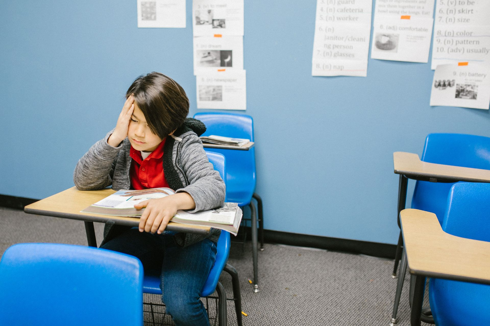

Transtorno fóbico-ansioso
O medo é uma reação em favor da sobrevivência que ocorre diante de uma ameaça à vida ou à integridade psíquica, sendo inerente à condição humana. Há os medos naturais específicos do desenvolvimento (escuro, altura, animais, trovão, chuva),
que surgem quando a criança toma consciência do mundo, de coisas que não consegue entender ou controlar, mas que desaparecem ao longo do tempo, quando os pais reagem com atitudes de conforto, proteção e tranquilização.
Quando
a criança é exposta constantemente a uma fonte de perigo ou tensão surge a ansiedade que, em sua expressão fisiológica, é manifestada por meio de sudorese, taquicardia, enurese, dores corporais, contenção da respiração e, em sua forma
cognitiva, se mostra como uma constante preocupação com eventos trágicos que podem vir a acontecer a si mesma e às pessoas amadas. A fobia é uma reação exagerada de medo excessivo e irracional, desencadeado pela presença ou antecipação
de um objeto, lugar ou situação aterrorizante que leva a uma sensação de descontrole do corpo e da mente. Do ponto de vista psicológico, representa uma expressão simbólica de conflitos psicológicos relacionais, carregados de fantasias
de morte, destruição e/ou doença, as quais escondem o impulso agressivo dirigido ao outro significativo amado, hostil e temido. A criança projeta no desconhecido, no objeto, na situação (roupas, ônibus, pessoas estranhas, animais)
o perigo da ausência (ou presença) e falta de suporte parentais. Essa angústia é situada em algo concreto, sendo assim transformada em ansiedade, para que possa ser enfrentada, caso contrário, a criança viverá uma iminente e confusa
sensação de aniquilamento, acompanhada de sentimentos de desamparo, desproteção e de incapacidade de autodefesa.
O transtorno de ansiedade vem se instalar pela vivência repetitiva de experiências estressantes e/ou traumáticas
ou pela aprendizagem de crenças fóbicas ou pela imitação de comportamentos que transmitem uma percepção negativa do mundo e do outro, que são vistos como uma permanente ameaça (CORDIOLI; TERUCHKIN, 2007), ou ainda pela superproteção
dos pais que inibem a capacidade defensiva da criança de enfrentar a realidade. Na maioria dos casos, as fobias estão ligadas a uma ansiedade em relação à própria segurança ou a uma ansiedade de ser ferido ou ferir alguém a quem ama.
Podemos ilustrar o seguinte caminho de formação da patologia:
Os transtornos de ansiedade mais comuns da infância são:
• Ansiedade de separação
• Ansiedade fóbica
• Ansiedade social
Os comportamentos problemáticos
correspondentes a cada um (medo de ficar sozinha, de sair de casa, de ir ao banheiro sozinha, de dormir sozinha, recusa em ir à escola, medo de escuro, medo de insetos e/ou animais, medo de estranhos) tem sua expressão em
sintomas clínicos, tais como: choro fácil, ataques abruptos de raiva, morder os lábios, roer unhas, pesadelos, irritabilidade, comportamento aderente/pegajoso, timidez, passividade, retraimento, enurese noturna, sudorese nas mãos e pés, dentre outros.
Os transtornos de ansiedade contemplam os dilemas do contato de união/separação, dependência/independência e as polaridades conflitivas da confiança/ desconfiança, passividade/agressividade. A polaridade conflitiva passividade/agressividade
vivida pela criança que sofre de ansiedade revela uma conduta de submissão passiva ao outro e de amabilidade, desejando agradar, para sempre evitar conflitos. Em um caso de fóbico ansioso apresentado por uma criança de 7 anos de idade,
ela experienciava a ambivalência da raiva e do amor contra a mãe frágil e o pai inseguro que não ofereciam segurança, amparo e confiança nem para eles próprios, nem para a criança. Em sua passividade, foi criando ajustamentos disfuncionais
para ocultar sua incapacidade de opor-se, enfrentar, atacar, agredir a fonte de ameaça (ou de desproteção), escondendo sentimentos de raiva, insatisfação e a manifestação da própria agressividade contra o outro amado (do qual não deseja
se separar) e/ou temido. A criança, ao situar objetivamente seu medo em um objeto, animal ou situação, faz uso do ajustamento criativo para preservar a imagem e a relação parental falsa de força e proteção. A fantasia de morte dos
pais traz o perigo da perda que expõe a falta de amparo interno e a falha na proteção parental.
O ambiente em que a criança vive

A criança fóbica-ansiosa mora em uma casa mal-assombrada, vivendo dramas afetivos calcados na falta de confiança, segurança e suporte (polaridade confiança/desconfiança). A criança tem medo do espaço interno da própria casa, de ficar só,
de se deslocar sozinha pelos aposentos da casa, de dormir sozinha, quando naturalmente a casa deveria ser sentida como um “útero protetor”. A criança toma-se por um eu desamparado, frágil, dependente, que não confia em si e teme o
outro estranho (um monstro noturno que aparece no quarto), e cujo corpo teme e precisa conter para controlar as fortes sensações de excitação produzidas pela intensa ansiedade.
Algumas das temáticas conflitivas experimentadas
como fundo nas relações parentais são os dilemas do contato da união/separação e da dependência/independência. Encontramos pais superprotetores que pretendem resguardar a criança da dor, sofrimento, angústia, doença ou qualquer acontecimento
dramático, agindo com excessiva preocupação com a segurança da criança - e a superproteção (oriunda da boa intenção dos pais) desperta o sentimento de incompetência, fragilidade, incapacidade na criança. Há as mães ansiosas, que tiveram
experiências traumáticas na infância em relação aos próprios pais e desenvolveram fobias. Há os pais ameaçadores, violentos que agridem fisicamente a mãe e/ou os filhos. Ainda há pais que se sensibilizam demasiadamente com os medos
da criança, supervalorizando-os e, por isso, dispensando uma atenção afetiva exagerada à criança, que reforça sua fragilidade e medo de separação. Um outro exemplo são os pais imaturos que infantilizam a criança e, assim, inibem o
seu desejo de independência. E, principalmente, pais que percebem o mundo de forma negativa e hostil, no qual as pessoas externas à família são vistas como perigosas e não confiáveis.
As dinâmicas parentais acima descritas
ilustram que, no seio familiar, reina um ambiente com uma sobrecarga de apreensão com o “o quê está por vir” trágico. A criança, dessa forma, depara-se com a angústia da escolha de permanecer na união ou buscar a separação; e também
com a renúncia à dependência infantil para seguir rumo à independência, cujo conflito anuncia a dúvida da opção por si (sua autonomia) ou pelos pais (domínio parental). A criança saudável é aquela que tende “no sentido da independência
e da aventura” (WINNICOTT, 1983, p. 68), desejosa de abdicar da dependência absoluta e relativa das figuras parentais no curso do seu processo de desenvolvimento emocional e da formação da sua personalidade.
Sobre a Saber
A Saber Educacional iniciou suas atividades em abril de 2020, com o objetivo de oferecer atendimento clínico especializado a crianças, adolescentes e adultos
Nossas Redes Sociais